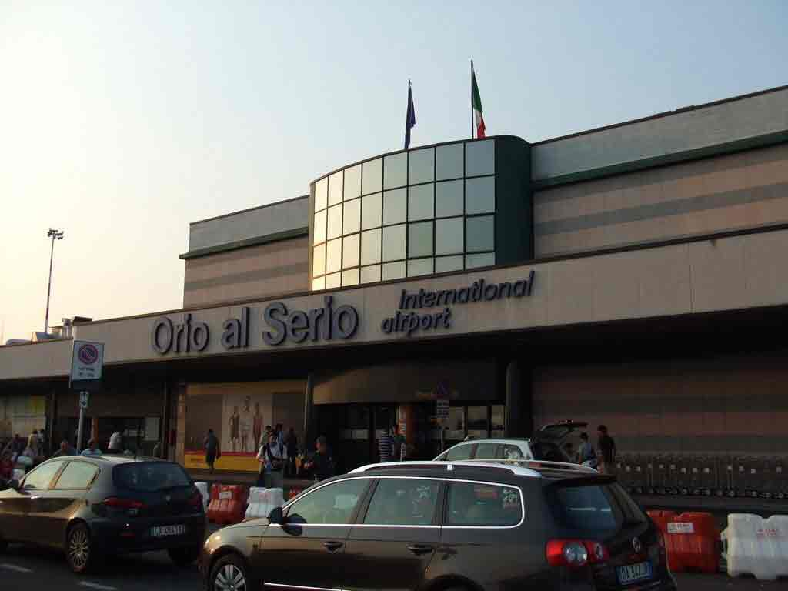
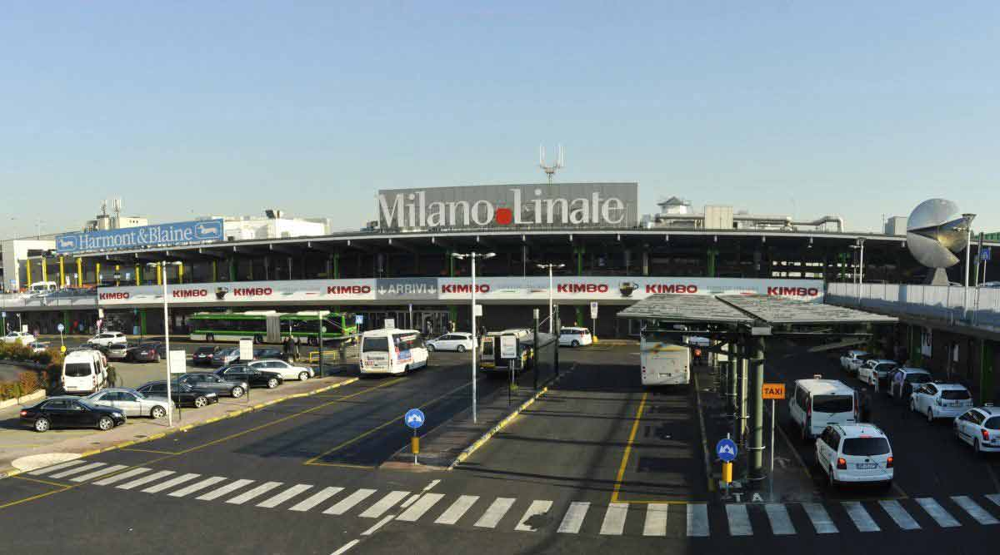

Com arribar des de l’aeroport de Malpensa

És l’aeroport principal, on aterren la majoria dels vols procedents de fora d’Itàlia. Malpensa es troba aproximadament a uns 45 km. de la ciutat de Milà.
Des d’allí tens diverses opcions:
Usar el servei d’autobusos que trobaràs a la terminal i que et portaran fins a l’estació central de Milà. El preu del bitllet és de 5€.
Prendre el tren Malpensa Express, que connecta l’aeroport amb l’estació Cardona. Triga uns 40 minuts a fer el recorregut, té sortides cada mitja hora i un preu de 13€.
Com arribar des de Orio al Serio (Bèrgam)

Si el teu vol aterra en l’aeroport de Orio al Serio, et trobaràs a uns 50 km. de Milà.
En el mateix aeroport hi ha un servei d’autobusos que et portaran a l’estació central de Milà, per mitjà de la companyia Autostradale.
També pots optar pel tren, que et deixarà al centre de la ciutat.
Com Arribar

Les línies 73 i X73 comuniquen Linate amb l’estació de metro de Sant Babila. La línia 73 opera tots els dies cada 10 minuts, mentre que la X73 (directa) de dilluns a divendres cada 20 minuts.
El preu és el d’un bitllet senzill i és la forma més econòmica d’arribar a l’aeroport o a Milà. Si es compra en l’autobús, el bitllet té un petit suplement.
Starfly: Surt de Linate entre les 6:10 i les 23:30 de dilluns a divendres, de 6:30 a 22:00 hores la resta de dies. Realitza parades en Lambrate i en l’Estació Central. La freqüència oscil·la entre 20 i 30 minuts depenent de l’hora del dia.
El temps de trajecte és de 25 minuts i el preu de 5€.
Air Bus: Surt de l’Aeroport de Linate entre les 6:30 i les 23:30 hores i triga 25 minuts a arribar a l’Estació Central (Plaza Luigi de Savoia). Fa una parada intermèdia en la Plaza Dateo.
El preu és de 5€, o 9€ si s’adquireix el bitllet d’anada i volta.
En tots els casos també podràs agafar un Taxi o contractar un servei de trasllat. Són dues opcions molt més còmodes però bastant més cares.